기계정비산업기사 (2019-03-03 기출문제)
1과목: 공유압 및 자동화시스템
1. 가열기를 나타낸 공ㆍ유압기호는?
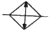
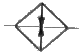
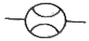
(정답률: 82%)

2. 다음 실린더 중 전진운동과 후진운동의 속도와 힘을 같게 할 수 있는 것은?
- 탠덤 실린더
- 충격 실린더
- 복동 양로드 실린더
- 단동 텔레스코프 실린더
(정답률: 88%)
3. 외부의 압력부하가 변하더라도 회로에 흐르는 유량을 항상 일정하게 유지시켜 주면서 유압모터의 회전이나 유압실린더의 이동속도를 제어하는 밸브는?
- 분류 밸브
- 단순 교축 밸브
- 압력 보상형 유량 조절 밸브
- 온도 보상형 유량 조절 밸브
(정답률: 92%)
4. 용적형 공기압축기가 아닌 것은?
- 격판 압축기
- 베인 압축기
- 터보 압축기
- 피스톤 압축기
(정답률: 55%)
5. 압력이 설정압력 이상이 되면 작동유를 탱크로 귀환시키는 회로는?
- 단락 회로
- 미터인 회로
- 압력설정 회로
- 미터아웃 회로
(정답률: 82%)
6. 유압모터 중 구조가 간단하며 출력토크가 일정하고 정ㆍ역회전이 가능하지만 정밀한 서보기구에는 적합하지 않은 모터는?
- 기어 모터
- 베인 모터
- 레디얼 피스톤 모터
- 액시얼 피스톤 모터
(정답률: 78%)
7. 공기의 체적과 온도의 관계를 표현한 것은?
- 보일의 법칙
- 샤를의 법칙
- 베르누이 원리
- 파스칼의 원리
(정답률: 71%)
8. 다음 유압 회로에서 실린더에 70kgf/cm2 압력이 가해지고 있다. 이 실린더의 동작으로 옳은 것은? (단, 마찰저항은 무시한다.)
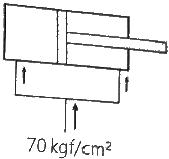
- 전진한다.
- 정지한다.
- 후진한다.
- 전진 후 후진한다.
(정답률: 78%)
9. 어큐물레이터의 용도로 적합하지 않은 것은?
- 압력 증대용
- 에너지 축적용
- 펌프 맥동 완화용
- 충격압력의 완충용
(정답률: 73%)
10. 다음 조작방식의 명칭은?
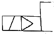
- 유압 2단 파일럿
- 전자ㆍ유압 파일럿
- 전자ㆍ공기압 파일럿
- 공기압ㆍ유압 파일럿
(정답률: 74%)
11. 프로그램에 의한 제어가 아닌 것은?
- 조합 제어
- 시퀀스 제어
- 파일럿 제어
- 시간에 따른 제어
(정답률: 70%)
12. 플라스틱, 유리, 도자기, 목재 등과 같은 절연물의 위치를 검출할 수 있는 센서는?
- 압력 센서
- 리드 스위치
- 유도형 센서
- 용량형 센서
(정답률: 62%)
13. 유압시스템에서 펌프 구동 동력이 부족할 때 발생되는 현상은?
- 작동유가 과열된다.
- 토출유량이 많아진다.
- 실린더 추력이 감소된다.
- 유압유의 점도가 높아진다.
(정답률: 83%)
14. 두 종류의 금속을 접합하여 폐회로를 만들고 두 접합점의 온도차를 다르게 유지했을 때 두 금속 사이에 기전력이 발생하여 전류가 흐르는 현상은?
- 제백 효과
- 초전 효과
- 톰슨 효과
- 펠티어 효과
(정답률: 79%)
15. 다음 논리 회로에서 출력이 1이 되기 위한 입력 값으로 옳은 것은?
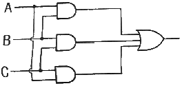
- A=B=C=0
- A=1, B=C=0
- A=C=0, B=1
- A=B=1, C=0
(정답률: 67%)
16. 자동화의 작업순서를 제어하는 제어 시스템(control system)의 최종작업 목표가 아닌 것은?
- 공정 상태 확인
- 작업 공정의 계획 수립
- 처리된 결과에 기초한 공정 작업
- 공정 상태에 따른 자료의 분석처리
(정답률: 61%)
17. 스테핑 모터의 속도를 결정하는 요소는?
- 펄스의 방향
- 펄스의 전류
- 펄스의 주파수
- 펄스의 상승시간
(정답률: 75%)
18. 설비 보전과 관리 차원에서 신뢰성을 활용한 경우의 특징이 아닌 것은?
- 제품 출고시간을 판단할 수 있다.
- 설비의 장래 가동 상황을 예측할 수 있다.
- 사용 시간과 고장 발생과의 관계를 알 수 있다.
- 운전 주인 설비의 장비수리나 생산계획수립에 도움이 된다.
(정답률: 71%)
19. 다단형 피스톤 로드를 가진 형태로 실린더 길이에 비해 긴 행정거리를 얻을 수 있는 실린더는?
- 충격 실린더
- 탠덤 실린더
- 텔레스코프 실린더
- 복동 양 로드 실린더
(정답률: 79%)
20. 양 제어밸브라고도 하며 다음 그림과 같이 압축 공기가 입구 Y에 작용할 경우 볼에 의해 다른 입구 X를 차단하면서 공기의 통로를 Y에서 A로 개방하는 구조의 밸브는?
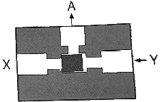
- 2압 밸브
- 셔틀 밸브
- 차단 밸브
- 체크 밸브
(정답률: 65%)
2과목: 설비진단관리 및 기계정비
21. TPM 관리와 전통적 관리의 차이점 중 TPM 관리에 속하지 않는 것은?
- 결과 측정
- 사전 활동
- 원인추구 시스템
- 전사적 조직과 전사원 참여
(정답률: 56%)
22. 설비배치의 형태 중 제품별 배치 형태의 특징으로 틀린 것은?
- 기계 대수가 적어지고 공구의 가동률이 증가한다.
- 작업을 단순화할 수 있으므로 작업자의 훈련이 용이하다.
- 공정이 확정되므로 검사 횟수가 적어도 되며 품질관리가 쉽다.
- 작업의 융통성이 적고 공정계열이 다르면 배치를 바꾸어야 한다.
(정답률: 53%)
23. 다음 중 설비진단 기법이 아닌 것은?
- 진동법
- 응력법
- 회절법
- 오일 분석법
(정답률: 71%)
24. 설비를 배치할 때 필요한 소요면적 산정법으로 기계 1대의 소요 면적을 계산하여 전체 면적을 산출하는 방식은?
- 변환법
- 계산법
- 표준 면적법
- 비율 경향법
(정답률: 59%)
25. 설비의 열화 중 피로현상의 원인은?
- 자연적인 열화
- 비교적인 열화
- 재해에 의한 열화
- 사용에 의한 열화
(정답률: 82%)
26. 다음 그림은 어떤 보전 조직을 나타낸 것인가?
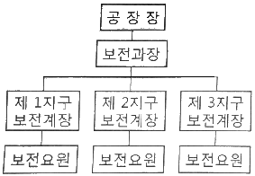
- 집중보전 조직
- 부분보전 조직
- 절충보전 조직
- 지역보전 조직
(정답률: 75%)
27. 진동 현상을 표현할 때 진폭 표시의 파라미터가 아닌 것은?
- 변위
- 속도
- 위상
- 가속도
(정답률: 60%)
28. 사람이 가청할 수 있는 최대 가청음의 세기(W/m2)는? (단, W : 음향출력, m2 : 표면적)
- 10-12
- 10
- 1010
- 2010
(정답률: 57%)
29. 여러 파동이 이루는 마루끼리 골은 골끼리 서로 만나 엇갈려 지나갈 때 그 합성파의 진폭이 크게 나타나는 음의 현상은?
- 맥놀이
- 보강간섭
- 소멸간섭
- 마스킹효과
(정답률: 65%)
30. 설비의 고장률에 관한 설명으로 옳은 것은?
- 설비의 도입 초기에는 고장이 없다.
- 마모 고장기에서 예방정비의 효과가 크다.
- 설계불량으로 인한 고장은 우발 고장기에 주로 발생한다.
- 우발 고장기의 고장률 곡선은 고장률 증가형이다.
(정답률: 71%)
31. 윤활제 중 그리스의 상태를 평가하는 항목이 아닌 것은?
- 점도
- 주도
- 이유도
- 적하점
(정답률: 55%)
32. 설비진단기술의 기본 시스템 구성에서 간이진단 기술이란?
- 작업원이 실시하는 고장검출 해석 기술
- 전문요원이 실시하는 스트레스 정량화 기술
- 전문요원이 실시하는 강도, 성능의 정량화
- 현장 작업원이 사용하는 설비의 제1차 건강진단기술
(정답률: 83%)
33. 직접 오는 소음은 소음원으로부터 거리가 2배 증가함에 따라 역 얼마나 감소하는가?
- 2dB
- 4dB
- 6dB
- 8dB
(정답률: 86%)
34. 보전효과 측정방법에서 항목별 계산식이 틀린 것은?
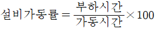
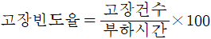
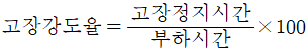
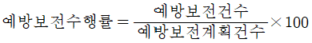
(정답률: 65%)
35. 설비보전 표준의 종류가 아닌 것은?
- 개별 표준
- 설비 성능표준
- 보전 작업표준
- 시운전 검수표준
(정답률: 53%)
36. 석유 제품의 산성 또는 알칼리성을 나타내는 것으로써 산화 조건하에서 사용되는 동안 기름 중에 일어난 변화를 알기 위한 척도로 사용되는 것은?
- 주도
- 중화가
- 산화 안정도
- 혼화 안정도
(정답률: 63%)
37. 설비관리 기능을 일반 관리기능, 기술기능, 실시기능 및 지원기능으로 분류할 때 일반 관리기능이 아닌 것은?
- 보전업무 분석 및 검사기준 개발
- 보전정책 결정 및 보전시스템 수립
- 자산관리와 연동된 설비관리 시스템 수립
- 보전업무의 경제성 및 효율성 분석ㆍ측정
(정답률: 56%)
38. 최고 재고량을 일정량으로 정해 놓고, 사용할 때마다 사용량만큼을 발주해서 언제든지 일정량을 유지하는 방식은?
- 2궤법 방식
- 정량방주방식
- 정기발주방식
- 사용고발주방식
(정답률: 62%)
39. 기계의 결함을 분석하기 위하여 사용되는 진동수의 단위는?
- g
- Hz
- mm/s
- micron
(정답률: 79%)
40. 측정 반복성이 양호하고 사용 주파수의 영역이 넓으며, 먼지, 습기, 온도의 영향이 적어 장기적 안정성이 좋은 진동 센서 설치방법은?
- 손 고정
- 밀랍 고정
- 나사 고정
- 영구자석 고정
(정답률: 79%)
3과목: 공업계측 및 전기전자제어
41. 도너(donor)와 억셉터(acceptor)의 설명 중 틀린 것은?
- 반도체 결정에서 Ge이나 Si에 넣는 5가의 불순물을 도너라고 한다.
- N형 반도체의 불순물은 억셉터이고 P형 반도체의 불순물이 도너이다.
- 반도체 결정에서 Ge이나 Si에 넣는 3가의 불순물에는 In, Ga, B 등이 있다.
- Ge이나 Si에 도너 불순물을 넣어 결정하면 과잉 전자(excess electron)가 생긴다.
(정답률: 68%)
42. 그림은 접점에 의한 논리회로를 표현한 것이다. 알맞은 논리회로는?
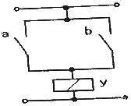
- OR 논리회로
- AND 논리회로
- NOT 논리회로
- X-OR 논리회로
(정답률: 70%)
43. 3상 유도전동기의 Y-△기동에 대한 설명 중 틀린 것은?
- 기동 시 선전류는 1/√3 로 감소된다.
- 10~15kW 정도의 전동기에 적당하다.
- 기동전류는 전부하 전류보다 매우 크다.
- 기동 시는 고정자 권선을 Y결전하고 정상 운전 시 △결선하는 방법이다.
(정답률: 54%)
44. 어떤 제어계의 응답이 지수 함수적으로 증가하고 일정 값으로 되었다면, 이 제어계는 어떤 요소인가?
- 미분요소
- 부동작요소
- 1차 지연요소
- 2차 지연요소
(정답률: 67%)
45. 콘덴서에 대한 설명으로 옳은 것은?
- 단위로는 F가 사용된다.
- 발열작용을 하므로 전구로도 사용된다.
- 자기작용을 하므로 전자석으로 사용된다.
- 직렬연결은 가능하나 병렬연결은 할 수 없다.
(정답률: 69%)
46. 어떤 도체에 5A의 전류가 10분 동안 흐르면 이 때 이동한 전기량은 몇 C인가?
- 500
- 1000
- 2000
- 3000
(정답률: 73%)
47. 조작량의 일정한 값에 대응하여 제어대상인 자신에 의해 제어량이 일정한 값에 도달하는 성질은 무엇이라고 하는가?
- 자기 평형성
- 자동 평형성
- 프로세스제어
- 프로세스특성
(정답률: 59%)
48. 유접점 시퀀스 제어의 특징이 아닌 것은?
- 개폐 부하의 용량이 크다.
- 제어반의 외형과 설치면적이 작다.
- 온도 특성이 좋다.
- 입ㆍ출력이 분리된다.
(정답률: 64%)
49. NOR 회로를 나타내는 논리회로는?
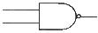
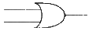
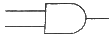
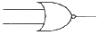
(정답률: 80%)
50. 국제단위계(SI)의 기본 단위가 아닌 것은?
- 길이-미터
- 전류-암페어
- 질량-킬로그램
- 면적-제곱미터
(정답률: 68%)
51. 물리적인 양을 전기적 신호로 변환하거나, 역으로 전기적 신호를 다른 물리적인 양으로 바꾸어주는 장치는?
- 포지셔너
- 오리피스
- 트랜스듀서
- 액추에이터
(정답률: 73%)
52. 아래의 회로도에서 입력 A=0, B=1일 때 출력 C, S로 옳은 것은? (단, C : 자리올림(carry), S : 합(sum))
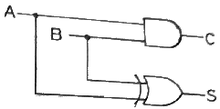
- C=0, S=0
- C=0, S=1
- C=1, S=0
- C=1, S=1
(정답률: 65%)
53. 시퀀스 제어회로에서 입력에 의해 작동된 후 입력을 제거하여도 계속 작동되는 회로는?
- 인터록회로
- 타이머회로
- 자기유지회로
- 수동복귀회로
(정답률: 80%)
54. 와류식 유량계는 유량에 비례한 주파수에 의해 체적유량을 측정할 수 있다. 안정한 와류를 발생시키는 조건은? (단, 와류의 간격을 L, 와류사이의 거리를 l이라 한다.)
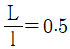
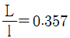
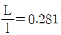
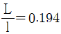
(정답률: 63%)
55. 전기자 도체에 전류는 전기자 도체가 브러시를 통과할 때마다 반대방향으로 바뀐다. 이러한 전기자 권선의 교류 기전력 직류 기전력으로 변환하는 것을 무엇이라 하는가?
- 정류
- 교번
- 점호
- 섬락
(정답률: 66%)
56. P형 반도체의 다수 반송자(Carrier)는?
- 전자
- 정공
- 중성자
- 억셉터
(정답률: 59%)
57. E1=80V인 전압과 E1보다 위상이 90°앞선 E2=60인 전압의 합성전압 E0(V)는?
- 100
- 110
- 120
- 140
(정답률: 44%)
58. 제백효과(Seeveck effect)를 이용한 온도계는?
- 2색온도계
- 열전온도계
- 저항온도계
- 방사온도계
(정답률: 74%)
59. 제어요소의 동작 중 연속동작이 아닌 것은?
- 미분동작
- on-off동작
- 비례미분동작
- 비례적분동작
(정답률: 79%)
60. 면적식 유량계의 설치 요령으로 틀린 것은?
- 설치 시에 수직으로 설치한다.
- 하류측에는 반드시 역지밸브를 설치하여야 한다.
- 가로ㆍ세로방향으로 응력이 걸리도록 하여야 한다.
- 유체의 유입 방향은 반드시 하부에서 상부방향으로 한다.
(정답률: 57%)
4과목: 기계정비 일반
61. 아주 높은 온도를 유지하는 장치의 실(seal)로 사용되고 다른 실에 비해 유밀기능이 떨어지므로 와이퍼(Wipwe)형 실로 많이 사용되는 것은?
- 금속 실(metallic seal)
- 플랜지 실(flamge seal)
- 스프링 실(spring seal)
- 기계적 실(mechanical seal)
(정답률: 69%)
62. 배관용 파이프에 나사를 가공하기 위하여 사용하는 공구는?
- 오스터(oster)
- 파이트 벤더(pipe bender)
- 파이프 렌치(pipe wrench)
- 플레어링 툴 셋(flaring tool set)
(정답률: 78%)
63. 100m 높이에 유량 240L/min으로 물을 보내고자 할 때 사용되는 펌프에 필요 동력은 약 몇 kW인가? (단, 물의 비중량은 1000kg/m3이다.)
- 1.8
- 3.9
- 4.8
- 7.6
(정답률: 47%)
64. 버니어 캘리퍼스의 용도로 적합하지 않은 것은?
- 물체의 길이 측정
- 구멍의 내경 측정
- 구멍의 깊이 측정
- 나사의 유효직경 측정
(정답률: 76%)
65. 일반적인 주철관의 특징으로 틀린 것은?
- 가격이 고가이다.
- 내식성이 우수하다.
- 내구성이 우수하다.
- 수도, 가스 등의 배설관으로 사용한다.
(정답률: 77%)
66. 두 물체 사이의 거리를 일정하게 유지시키면서 결합하는데 사용되는 볼트로 옳은 것은?
- 스터드 볼트(stud bolt)
- 스테이 볼트(stay bolt)
- 리머 볼트(reamer bolt)
- 관통 볼트(through bolt)
(정답률: 73%)
67. 펌프를 원리 구조상에 따라 분류할 때 용적형 회전 펌프의 종류에 해당되지 않는 것은?
- 기어 펌프
- 나사 펌프
- 편심 펌프
- 프로펠러 펌프
(정답률: 50%)
68. 수격현상에 의해 발생되는 피해현상이 아닌 것은?
- 압력강하에 따른 관로의 파손 발생
- 펌프 및 원동기의 역회전 과속에 따른 사고 발생
- 수격현상 상승합에 따라 펌프, 밸브, 관로등의 파손 발생
- 관로의 압력상승에 의한 수주 분리로 낮은 충격압 발생
(정답률: 64%)
69. 공동현상의 방지 대책이 아닌 것은?
- 펌프회전수를 낮게 한다.
- 양흡입 펌프를 사용한다.
- 펌프의 설치위치를 높게 한다.
- 임펠러의 재질을 침식에 강한 것으로 택한다.
(정답률: 71%)
70. 일반적인 기계분해 작업 시 주의사항으로 틀린 것은?
- 부착물 등을 파악하고 확인한다.
- 분해 중 이상이 없는지 점검한다.
- 표면이 손상되지 않도록 주의한다.
- 볼트와 너트를 조일 때는 균일하게 조인다.
(정답률: 69%)
71. 한쪽 또는 양쪽의 기울기를 갖는 평판 모양의 쐐기로 인장력이나 압축력을 받는 2개의 축을 연결하는 결합용 기계요소는?
- 키
- 핀
- 코터
- 리벳
(정답률: 64%)
72. 펌프를 중심으로 하여 흡입 수면으로부터 송출 수면까지 수직 높이를 무엇이라 하는가?
- 전양정
- 실양정
- 흡입양정
- 토출양정
(정답률: 48%)
73. 벨트 풀리와 벨트 사이의 접촉면에 치형의 돌기가 있어 미끄럼을 방지하고 맞물려 전동할 수 있는 벨트는?
- 평 벨트
- V 벨트
- 타이밍 벨트
- 체인 벨트
(정답률: 62%)
74. 압축기 벨브 플레이트 교환에 관한 내용으로 틀린 것은?
- 두께가 0.3mm이상 마모되면 교체한다.
- 마모된 플레이트는 뒤집어서 재사용한다.
- 교환시간이 되면 사용한계의 기준치 내에서도 교환한다.
- 마모한계에 달하였을 때는 파손되지 않아도 교환한다.
(정답률: 81%)
75. 전동기의 고장 현상과 원인의 연결이 틀린 것은?
- 기동 불능-공진
- 과열-과부하 운전
- 진동-베어링 손상
- 절연불량-코일 절연물의 열화
(정답률: 75%)
76. 송풍기의 중심 맞추기(centering)에 일반적으로 사용되는 측정기는?
- 센터 게이지
- 게이지 블록
- 높이 게이지
- 다이얼 게이지
(정답률: 62%)
77. 일반적인 펌프 성능 곡선에 나타나지 않는 내용은?
- 효율
- 비교회전도
- 축동력
- 전양정
(정답률: 64%)
78. M22 볼트를 스패너로 체결할 경우 가장 적절한 죔 방법은?
- 팔꿈치의 힘으로 돌린다.
- 손목의 힘만 사용하여 돌린다.
- 팔의 힘을 충분히 써서 돌린다.
- 발을 충분히 벌리고 체중을 실어서 돌린다.
(정답률: 76%)
79. 볼트, 너트의 풀림을 방지하기 위해 사용하는 방법으로 틀린 것은?
- 캡 너트에 의한 방법
- 로크 너트에 의한 방법
- 자동 죔 너트에 의한 방법
- 분할 핀 고정에 의한 방법
(정답률: 56%)
80. 송풍기 운전 중 점검사항이 아닌 것은?
- 베어링의 온도
- 베어링의 진동
- 임펠러의 부식여부
- 윤활유의 적정여부
(정답률: 59%)